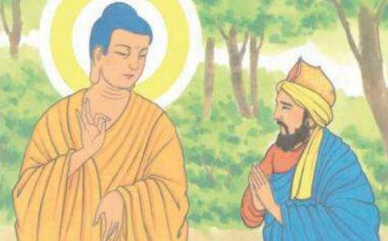

我听说是这样子：那时，佛陀住在王舍城郊的寒林丘冢间。当时给孤独长者有事情来到王舍城里，住在某长者的家里。晚上看到某长者吩咐他的妻子、仆人、工人说：“你们都起来，早点劈柴烧火、煮饭揉面，烹调各种料理，打扫、布置客厅房舍。”给孤独长者看了之后，心里猜想：今天长者要做什么呢？是要嫁女儿、娶媳妇呢？还是要宴请宾客、国王、大臣呢？心里这么想，就问长者：“您要做什么？要嫁女儿、娶媳妇呢？还是要宴请宾客、国王、大臣呢？”当时那位长者回答给孤独长者说：“我不是要嫁女儿、娶媳妇，也不是要宴请国王、大臣，只是为了迎请佛陀和比丘僧，才准备这些供养。”那时给孤独长者听到从未听说过的“佛陀”名字之后，心里非常欢喜，身上的每一个毛孔都充满了怡悦的感受，就问那位长者说：“什么叫做佛陀呢？”长者回答说：“有个出家人名叫瞿昙，是释迦族人，从释迦族中剃除须发，穿上袈裟衣，确实舍离家庭，出家修习正道，得到无上真正的觉悟，因此称为佛陀。”给孤独长者又问：“僧伽又是什么呢？”那位长者回答说：“如果婆罗门（祭司）阶级的族人剃除须发穿上袈裟衣，确实舍离家庭而追随佛陀出家，或是刹利（贵族、武士）阶级的族人；或是毗舍（平民）阶级的族人；或是首陀罗（奴隶）阶级的族人中的善男子等，剃除须发，穿上袈裟衣，确实舍离家庭，追随佛陀出家，就是僧伽。今天我就是要迎请佛陀和伴随佛陀身边的僧伽而准备各种供养的。”给孤独长者问那位长者说：“我现在可以去看世尊吗？”那位长者回答说：“您就住在这儿，我会迎请世尊到我家里来的，您会在这儿见到世尊的。”
当天晚上，给孤独长者就在全心全意想念着佛陀之中睡着了。天还没亮，忽然看到了天色已亮的样子，以为已经破晓了，就走出他的房间，走向城门去。来到城门下，夜才二更，城门未开。王家的惯例，为了等待远方的传令使节来往，都要等到初夜结束的时候才关城门；中夜结束了，又再打开城门，好让行人早点上路。当时，给孤独长者看城门开了，心想：一定是夜晚已经过去了，天色破晓了，城门开了，趁着天色已亮出城去，等到出了城门之后，天亮立刻消失了，又回到黑暗里。给孤独长者立即心生恐怖，身上的汗毛都竖起来了，莫非是人、非人或是奸诈狡猾的人要来恐吓我？就想要立刻转回去。那时，城门边有个天神住在那儿，那位天神就放出身上的光明，从那城门直到寒林丘冢间，一片光明普照。天神告诉给孤独长者说：“你要继续前进，将可得到殊胜的利益，千万不要退回去！”天神那时就以韵语说道：
“良马百匹，黄金百斤，骡车马车，各有百辆，种种奇珍重宝载在车上，宿生种了善根而得到这样的福报。如果有人怀着敬重之心，向着佛陀走一步，这一步的功德就远超过前述的福报之上了。所以长者你应当继续前进，千万不要退回去！”接着又再以韵语说道：
“雪山稀有的大白象，以纯金打造的金网做装饰，庞大的身躯配着长大的象牙。如果用这样名贵的大象来布施给别人，这样还是远不及心向佛陀的福德。所以长者应当快点前进，将会得到大利益，不要退回去了。”接着又再以韵语说道：
“一百个金菩闇国的女人，以种种妙宝、璎珞予以妆饰，把她们布施给别人，还是远不及向着佛陀前进一步的功德。所以长者应当快点前进，将会得到殊胜的利益，不要退回去了。”
当时给孤独长者就问天神说：“贤者，您是什么人？”天神回答说：“我是摩头息健大摩那婆，是你以前的好朋友。我在尊者舍利弗、大目揵连那儿对三宝生起了信敬之心，由于这个功德，现在得以生为天神，负责掌管这城门一带。因此才告诉长者应当前进，千万不要退回去，前进得利益，不要退回去。”
那时给孤独长者心里这么想着：佛陀出现在世间，这不是小事情。能够听到正法，这也不是小事情。所以天神劝我前进，前往谒见世尊。于是给孤独长者就顺着天身所放出的光明，一直走到寒林丘冢间。那时，世尊正巧走出房舍，在室外经行。给孤独长者远远就看到世尊，于是走到世尊面前，用世俗的礼节方式，恭敬地问候：“世尊您睡得还好吗？”世尊以韵语回答说：“净居于涅槃，因此常安乐，爱欲所不能染着，解脱之境不再有束缚。断绝一切希望，调伏炽燃的心火，内心得到寂静的止息，止息之下睡眠自然很安隐。”
那时，世尊带着给孤独长者进入房舍之中，就座而坐，端身专注于心念。当时，世尊为他说法，予以开示教导，启发鼓励。世尊说世间诸法无常，应当力行布施、持戒等有利于生天的福德事业。又解说欲贪的染着，欲贪的过患，以及远离欲贪的福利。给孤独长者听闻正法，当下见法、得法、入法、解法，超越了疑惑，不必再藉助其他的信仰、度化，就直接进入了正法律，内心毫无畏惧犹豫。于是从座位上站起来，整理衣服，敬礼佛陀，右膝着地，双手合掌禀告佛陀说：“世尊，我已经超越了世间的疑惑；善逝，我已经超越了一般世俗的信仰。我从今天起直到寿命终了，终生归依佛、归依法、归依比丘僧，做一个在家居士。请为我作鉴证！”这时，世尊才问给孤独长者：“你叫什么名字？”长者禀告佛陀：“名叫须达多。因为常常供给孤贫辛苦的人，大家都叫我给孤独。”世尊又问：“你住在那里？”长者禀告佛陀说：“世尊，我住在拘萨罗国境内的舍卫城里。但愿世尊能到舍卫城来，我当终生供养衣被、饮食、房舍、床卧、随病汤药。”佛陀问长者：“舍卫城有精舍吗？”长者禀告佛陀：“没有，世尊！”佛陀告诉长者：“你可在那里建立精舍，让比丘们往来时可以住宿。”长者禀告佛陀：“只要世尊肯到舍卫城来，我一定会建造精舍、僧房，让比丘们来往时可以住宿。”这时，世尊默然接受他的请求，那时长者知道世尊默然接受了他的请求，就从座位上站起来，顶礼佛足而后离去。